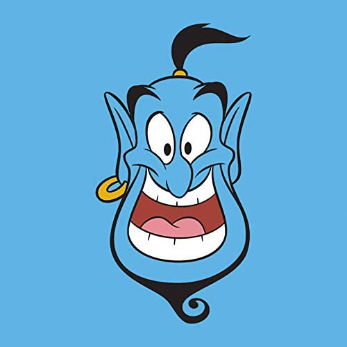

<!DOCTYPE html>

<html>
    <head>
        <meta charset="utf-8">
        <meta name="viewport" content="width=device-width, initial-scale=1.0">
        <title>Twitch Topt Games</title>
        <style>
            .navbar{
                background:white;
                padding: 0px 24px; /*一定要加，尤其畫面縮小的時候會很明顯看出*/
                box-shadow: 1.4px 1.4px 6px 0 #97a2a0;
            }
            .wrapper{
                display: flex;
                justify-content: space-between;
                align-items: center;
                max-width:1280px;  /* 最多1280px並且置中 */
                margin:0 auto;
                padding:0px 12px; /* 段落中文字在縮放的時候不會跟邊邊連在一起-*/
            }
            .navbar__titleName{
                font-size: 36px;
                font-weight: bold;
            }
            .navbar__list{
                list-style: none;
                display: flex;
                font-size: 18px;
                margin:0;
                padding: 0;
            }
            .navbar__list li{
                margin-left:5px;
                padding: 10px 5px;
                cursor: pointer;
            }
            .main{
                position: relative;
                background-color: thistle;
            }
            .main__wrapper{
                position: relative;
                margin: 0px auto 0px auto;
                padding: 80px 0px;
                text-align: center;
                color: white;
                
            }
            .main__wrapper h2{
                margin-top: 0;
            }
            .section__streams{
                display: inline-flex;
                flex-wrap: wrap;
                justify-content: space-between;
            }
            .streamCard{
                width:360px;
                background-color:teal;
                color:white;
                text-align:left;

            }
            .streamInfo{
                display: flex;
                align-items: center;
                padding: 10px;
            }
            .streamAvatar{
                width: 64px;
                height: 64px;
                border-radius: 50%;
                margin-right: 20px;

            }
            .streamAvatar img{
                width:100%;
                height:100%;
            }
            .streamIntro{
                display: flex;
                flex-direction: column;
            }
        </style>
    </head>

    <body>
        <nav class="navbar">
            <div class="wrapper">
                <div class="navbar__titleName">
                    Twitch Top Streams
                </div>
                <ul class="navbar__list">
                    <li>Twitch Top Streams</li>
                    <li>Twitch Top Streams</li>
                    <li>Twitch Top Streams</li>
                    <li>Twitch Top Streams</li>
                    <li>Twitch Top Streams</li>
                </ul>
            </div>
        </nav>
        <div class="main">
            <div class = "main__wrapper">
                <h1>League of Legends</h1> <!-- 會跟著nav bar改變-->
                <h2>Top 20 popular live streams </h2>
           
                <section class="section__streams">
                    <div class="streamCard">
                        
                        <div class="streamInfo">
                            <div class="streamAvatar">
                                
                            </div>
                            <div class="streamIntro">
                                <div class="streamTitle"> title</div>
                                <div class="streamChannel">channel</div>
                            </div>
                        </div>   
                    </div>
                </section>
            </div>
        </div>

        <script>
            const url = 'https://api.twitch.tv/kraken';
            function getGame(callback){
                const request = new XMLHttpRequest();
                request.open('GET', url + '/games/top?limit=5', true);
                request.setRequestHeader('Accept','application/vnd.twitchtv.v5+json');
                request.setRequestHeader('Client-ID','1u1jnbqu97z5f9vl8jy0z6dcfsifyv');

                request.onload = function(){
                    if(request.status >= 200 && request.status < 400 ){
                        const response = JSON.parse(request.response);
                        console.log(response);
                        callback(response);
                    }
                }

                request.onerror = function(){
                    console.log('系統不穩定，請再試一次');
                }
                request.send();
            }
            getGame((games))
            function getStream(){
                const request = new XMLHttpRequest();
                request.open('GET',url,true);
                request.setRequestHeader('Accept','application/vnd.twitchtv.v5+json');
                request.setRequestHeader('Client-ID','1u1jnbqu97z5f9vl8jy0z6dcfsifyv');


                request.onload = function(){
                    if(request.status >= 200 && request.status < 400 ){
                        const response = request.response;
                    }
                }

                request.onerror = function(){
                    console.log('系統不穩定，請再試一次');
                }
                request.send();
            }
        </script>
    </body>
</html>